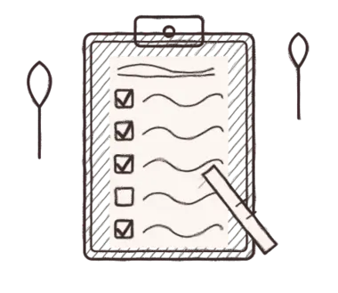
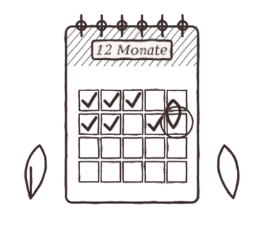
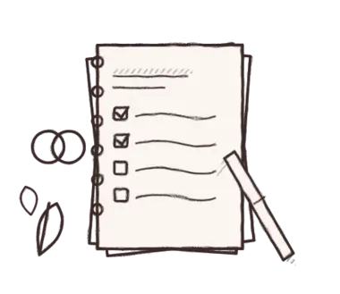

Herzlich willkommen, ihr Zwei
Eure Hochzeit, leicht geplant
Wir sind Bride & Light – Hochzeitsfotografie und Brautstyling von der Ostsee. Diese Helfer haben wir für euch gebaut, damit sich die Planung ein bisschen mehr nach Vorfreude anfühlt und ein bisschen weniger nach Tabellen.
- Kostenlos
- Ohne Anmeldung
- Daten bleiben in eurem Browser

Eure Planungs-Tools

Hochzeitsbudget-Rechner
Gesamtbudget eingeben, automatisch auf alle Posten verteilen, tatsächliche Kosten eintragen und den Überblick behalten.

Gästelisten-Planer
Gäste mit Begleitung, Kindern, Zusage und Essenswunsch erfassen – mit Zählung und Kosten pro Kopf.
Sitzplan-Planer
Tische anlegen, Gäste zuordnen und freie Plätze sehen – zugesagte Gäste lassen sich aus der Gästeliste übernehmen.
Getränkemengen-Rechner
Wie viel Sekt, Wein, Bier und Wasser braucht ihr? Mit Flaschen- und Kistenzahl.

Countdown & Checkliste
Hochzeitsdatum eingeben und sehen, was wann zu erledigen ist – von 12 Monaten vorher bis zum großen Tag.

Hochzeitsplaner als PDF
Kostenlos zum Ausdrucken: Budget, Gäste, Checkliste, Tagesablauf.